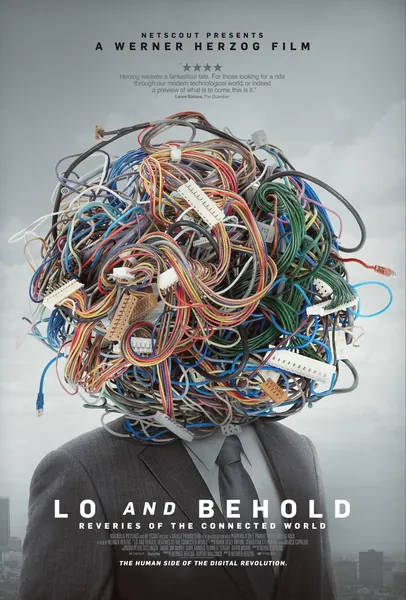

2016
Документальный, История
Вернер Херцог препарирует интернет в десяти главах: от первого сообщения в сети ARPANET, обрушившего университетскую сеть, до беспилотных автомобилей, угрозы солнечных вспышек и людей, страдающих аллергией на интернет. Формат фильма — беседы с учеными, инженерами и чудаками, ведущиеся с характерной для Херцога серьезностью. Это лучшая картина, в которой сеть предстает не просто как технология, а как стихийная сила природы: одновременно забавная, тревожная и философская.
Werner Herzog takes the internet apart in ten chapters: from the first ARPANET message that crashed a university network to self-driving cars, solar flares as a threat, and people suffering from internet allergy. The format — conversations with scientists, engineers and oddballs, delivered with Herzog's trademark earnestness. The best film about the network not as technology but as a force of nature: funny, anxious and philosophical at once.